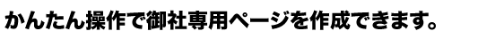

とことん車検ナビは、全国の選び抜かれた車検ショップを紹介するサイトです。
現在、掲載希望の車検ショップ様を募集しています。

「とことん車検ナビ」独自でSEO・SEM対策を行い、御社ページへの集客を請け負います。

必要な項目を入力するだけで独自のページを作成できますので、お申し込み完了後すぐにスタートできます。

- インターネットを使った車検販売に取り組みたい！
ただし、あまり費用はかけたくない･･･ - いまやインターネットは、車検販売にとっても欠かせないツールとなりました。
とはいえ、何から始めればいいのか、お困りの方も多いと思います。
そこでまずは「とことん車検ナビ」のような、車検販売専門のポータルサイト（※）への登録がおすすめ。
車検を考える多くのユーザーが、まず最初に訪れるサイトを押さえましょう。
「とことん車検ナビ」の強みは、抜群の集客力と、誰でもカンタンにページを作成できる親切な設計です。
お申し込み後すぐにウェブページの公開を開始できます。
必要な項目を
入力するだけで･･･
すぐにページが
作成可能！
（※）ポータルサイト･･･インターネット上のサービスの「入り口」となるサイトのこと。 - すでに車検予約サイトを公開しているが、
なかなかアクセスが増えない･･･ - アクセスが増えない大きな要因は、検索順位が低いからです。
そこで検索順位の高いポータルサイトへ登録することでお客さんが発見されやすくなり、成果に直結します。
また複数のサイトに登録することで、ユーザーにアプローチする経路が複数確保でき、良い相乗効果が生まれます。
「とことん車検ナビ」は、常にSEO（検索結果で上位表示されるための対策）を行っていますので、登録するだけで検索上位表示の恩恵を受けることができます。


無料で詳しい資料をお送り致します。
リンク先のフォームに必要事項をご記入下さい。FAXでも資料請求が可能です。
掲載時のお支払は、口座引き落としでのご対応となります。
お申込み後、口座振替依頼書をご郵送させていただきますので、2週間以内にご返送をお願いします。
また、審査等に2ヶ月程度かかりますので、お手数ですが最初の2か月間はご請求書をお送りしますので、
お振込にてご対応お願いいたします。


直通ダイヤル：045-943-7261 受付時間：9:00～17:00（月～金）
株式会社MIC
「とことん車検ナビ掲載のお申し込み」とお伝えください。

- サイトの公開はお早めに！
- サイトを作成してから、Yahoo、Googleなどの検索エンジンに反映（インデックス、と呼びます）されるまでにはある程度の時間がかかります。（とことん車検ナビのトップページからはすぐに検索ができます）
インデックスされると、GoogleやYahooから「直接」ページに来てもらえるようになり、アクセス数が伸びます。 早め早めにサイトの公開、更新を行うと効果的です。
- 地域名を積極的に書こう！
- インターネットで検索されるワードのデータを見ると、「車検 ＋ 地域名」で検索される方が多くいます。
ぜひWEBサイトを作成するときは、検索されやすいよう「地域名」を積極的に書きましょう。その際、「○○県、○○市」だけではなく、区名、町名、駅名などまで記入したほうが検索にヒットする可能性が高くなります。